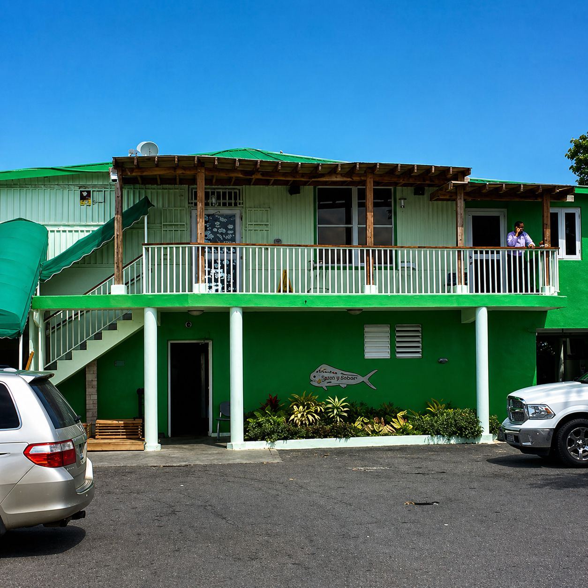
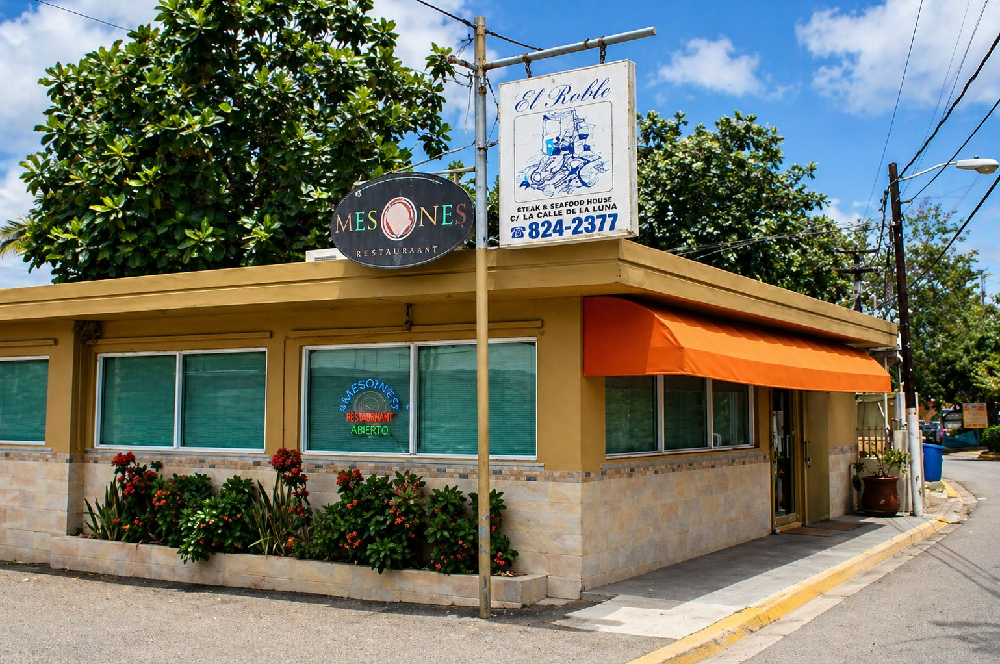
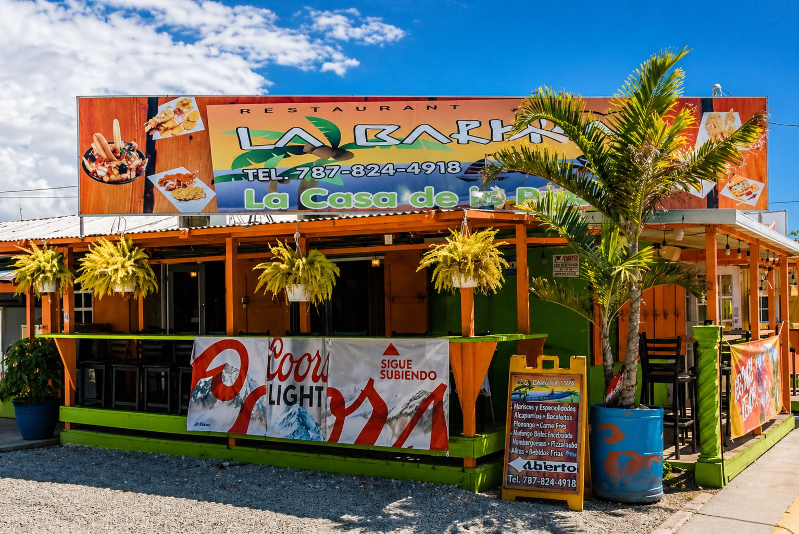
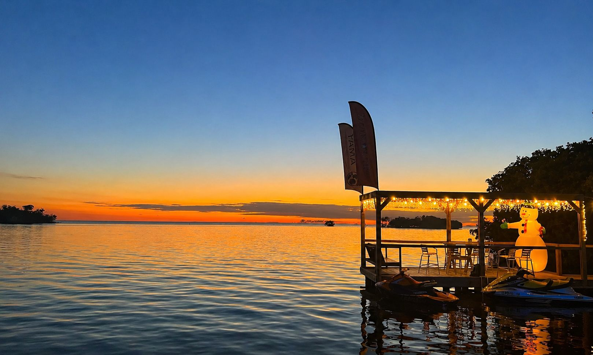
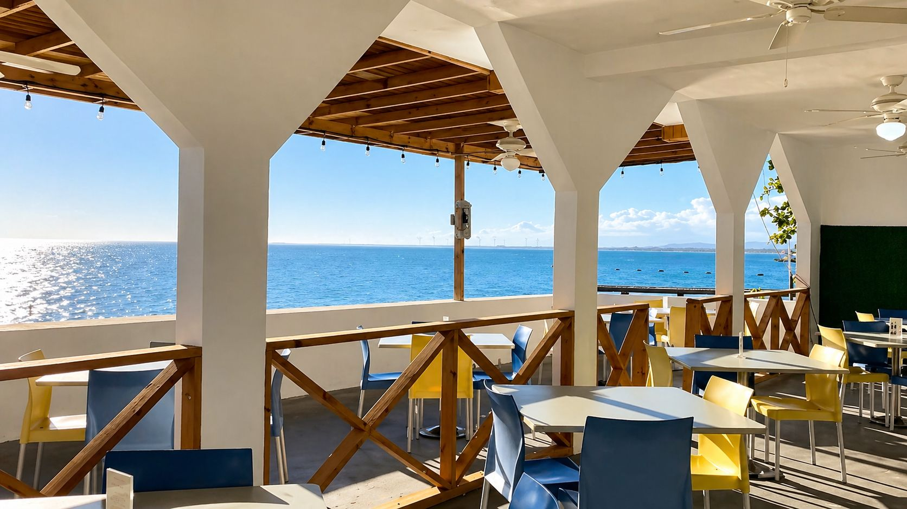
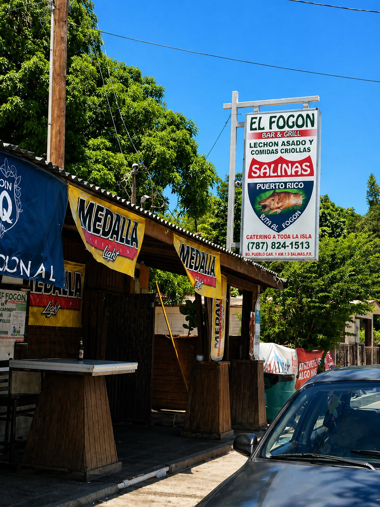
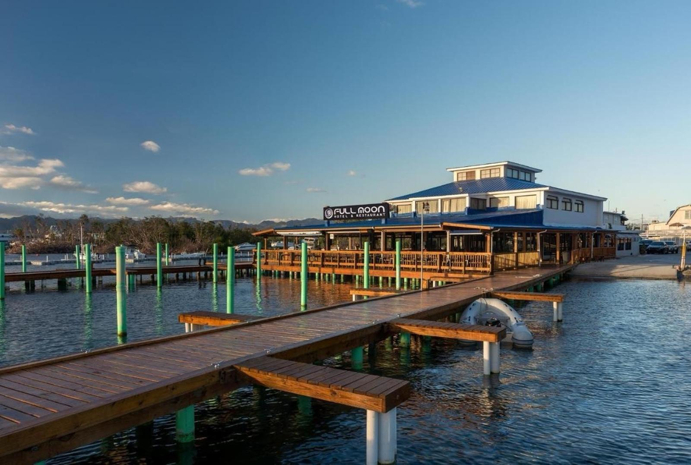

RESTAURANTES EN SALINAS
El Dorado

Restaurante reconocido por sus mariscos frescos y comida criolla. Utiliza pesca del día y ofrece platos como langosta, carrucho y mofongo relleno. Es uno de los más populares en la costa de Salinas.
Ladi's Place

Ubicado frente al mar, ofrece comida puertorriqueña y caribeña en un ambiente relajado. Es conocido por sus platos de mariscos y por brindar una experiencia con vista al océano.
Restaurante El Roble

Restaurante tradicional con enfoque en comida criolla y mariscos frescos. Tiene un ambiente familiar y es reconocido por la calidad de sus platos típicos de Puerto Rico.
La Barkita

Especializado en mariscos y comida caribeña, es muy visitado por turistas y locales. Ofrece platos variados con buen sabor y servicio, ideal para disfrutar cerca de la playa.
Sal Pa Dentro

Lugar moderno estilo bar-restaurante que ofrece tapas, comida puertorriqueña y bebidas. Perfecto para salir con amigos y disfrutar un ambiente casual y social.
Puerta al Sol Beach Club

Restaurante con vista al mar que combina comida caribeña con ambiente playero. Ideal para disfrutar comida y música en un ambiente relajado junto a la playa.
El Fogón

Conocido por su comida criolla auténtica, ofrece platos típicos como arroz, carnes y frituras. Es una opción más económica y tradicional en el área.
Full Moon Restaurant

Restaurante especializado en mariscos frescos con ambiente cómodo. Es una buena opción para quienes buscan variedad de platos del mar en Salinas.